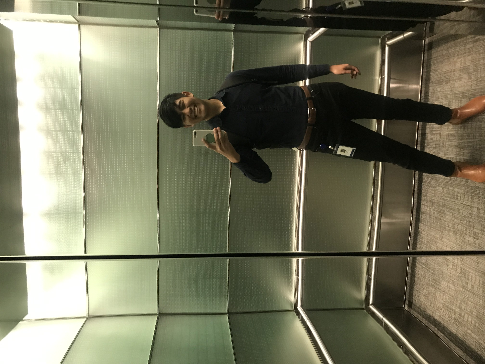
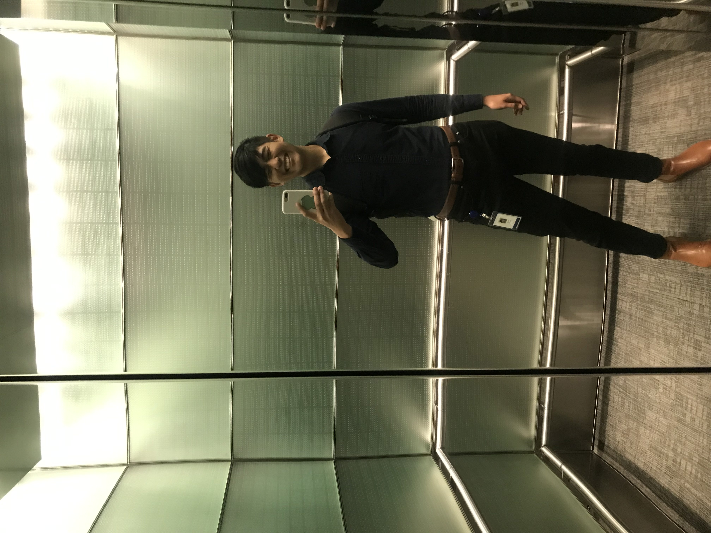
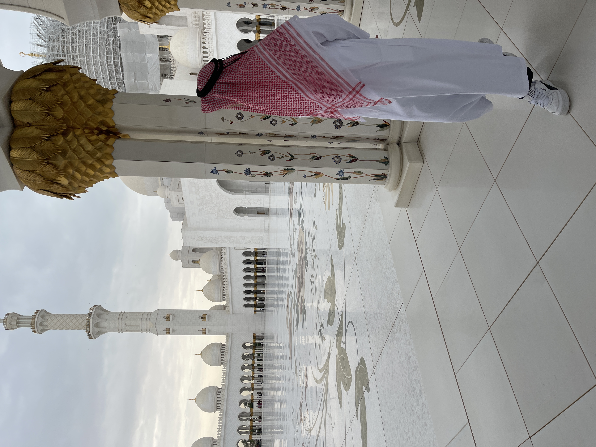
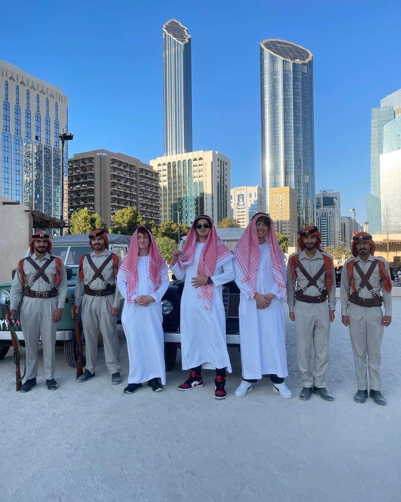
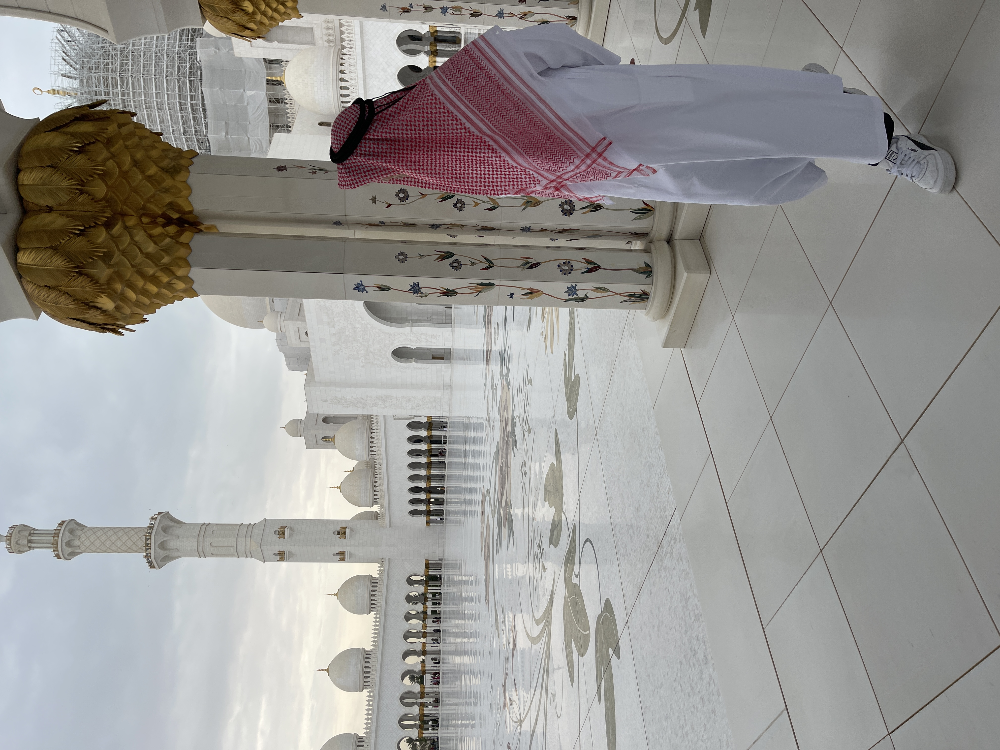
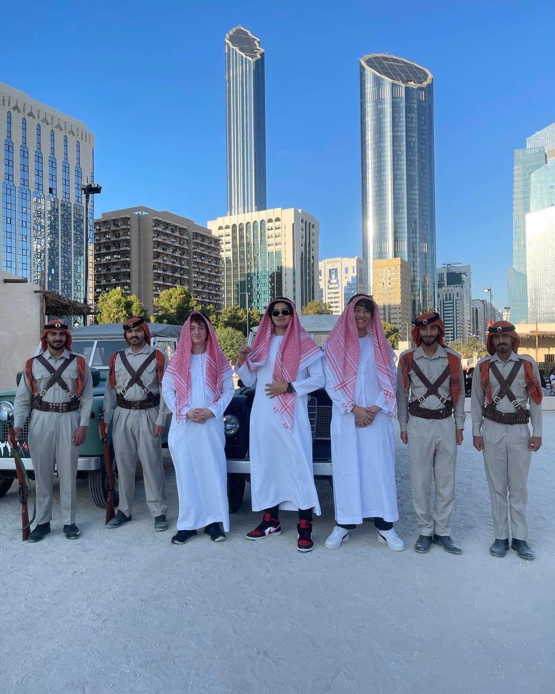

01 // Formative Years
Growing up, I sang, and played violin and piano. I also swam on year-round swim teams and played tennis. At the time, it might have been a lot, but I’m grateful to my parents for driving me to all the lessons and practices. These are all activities I now keep up with in my spare time!
02 // NYU & Early Career
At NYU, I studied economics and political science. Despite Covid lockdowns, I was able to intern at one of Europe’s largest hedge funds, a truly valuable experience that set me up for my next role at RBC. I also was heavily involved in Model United Nations, where I led a conference with over 500 attendees.
 

03 // Global Perspective
Before graduating I received the opportunity to study abroad in Abu Dhabi, a place with a culture I never imagined experiencing. It was an enriching experience where I made lifelong connections, as well as memories.
 



04 // Fixed Income Syndication
After graduating, I returned to RBC where I summered, to work on their Fixed Income Syndication Desk. There, I assisted with investment grade new issues, and found investment solutions for our institutional clients. I was promoted to associate in December 2025.
05 // Reviving Passions
I’ve recently returned to activities from childhood. I’ve made it a goal to swim 50 times this year in an effort to revive my cardio. But the most fruitful has been my busking project. Starting as just a way to spend my free time after work, busking for me grew into a satisfying creative outlet. I’ve played in weddings, for wedding proposals, dinners, and even corporate events. I typically play in Central Park, but also across other parks in New York and Brooklyn.